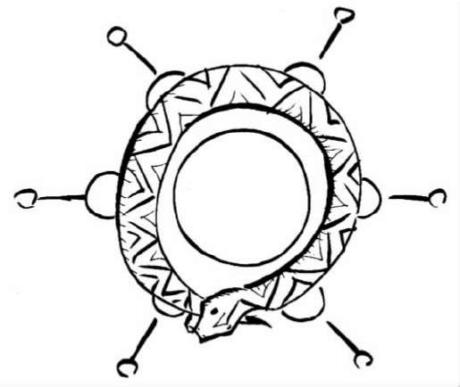

科学思想变化迅速。事实上挑出任意一门你喜欢的科学学科，你都能确信那门学科中的流行理论已和50年前的大不一样，和100年前的更是完全不同。与哲学和人文学科等其他的智识活动相比，科学是一个快速变迁的领域。大量有趣的哲学问题都聚焦于科学变迁。科学观念随着时间不断地变化，是否存在着一种清晰的变迁方式呢？当科学家们放弃现有理论而支持一种新的理论时，我们该作何解释？最新的科学理论在客观性上是否就比先前的更好？客观性的概念是否就有意义呢？
大多数关于这些问题的现代讨论都源于已故美国科学史学家和科学哲学家托马斯·库恩的一部著作。1963年库恩出版了《科学革命的结构》一书，它无疑是过去50年中最有影响的科学哲学著作。库恩思想的影响已经渗透到社会学和人类学等其他学科中，甚至广泛渗透到一般的精神文化之中。（《卫报》将《科学革命的结构》列为20世纪最有影响的100本书之一。）为了理解库恩的思想为什么引起如此轰动，我们需要简要回顾库恩的书出版之前科学哲学的发展状况。
逻辑实证主义的科学哲学
战后英语世界占统治地位的哲学思潮是逻辑实证主义。最初的逻辑实证主义者是20世纪20年代以及30年代初，在莫里茨·石里克领导下，由一群在维也纳相遇的哲学家和科学家组成的松散团体。（我们在第三章提到的卡尔·亨普尔与实证主义者交往密切，卡尔·波普尔也一样。）为了逃避纳粹的迫害，大多数实证主义者移民去了美国，在那里他们和追随者们一直对学院派哲学产生着强大的影响，直到大约60年代中期之后，这一哲学思潮开始解体。
逻辑实证主义者对自然科学、数学和逻辑高度重视。在20世纪初的几年里人们见证了激动人心的科学进步，特别是物理学领域的，这极其深刻地影响了实证主义者。实证主义者的目标之一就是使哲学本身变得更为“科学”，以使哲学领域也出现类似的进步。就科学来说，对实证主义者影响特别深的是它表面上的客观性。实证主义者相信其他的领域更多地表现探究者的主观意见，而科学问题能够用一种完全客观的方式解决。实验检验一类的方法使科学家能够将理论直接和事实相比较，从而作出一个基于可靠信息的、无偏见的关于理论价值的评价。因此，对于实证主义者来说科学是一种范式性的理性活动，一条通向既存真理的最可靠的道路。
尽管实证主义者高度尊重科学，他们却很少关注科学史。事实上，实证主义者认为哲学家们从科学史的学习中获益很少。这主要是因为，他们在所谓“发现的语境”和“证明的语境”之间作出了严格的区分。发现的语境指的是科学家获得一个特定理论的实际历史过程。辩护的语境则指理论已经存在时，科学家证明他的理论所使用的方法——包括检验理论，寻找相关证据，等等。实证主义者认为前者是一种主观的、心理的过程，不受精确规则的支配，而后者是一个客观的逻辑问题。他们主张，科学哲学家应该致力于研究后者。

图11 凯库勒在一场梦后偶然想到苯的六边形结构假说，梦里凯库勒看见一条蛇正试图咬住自己的尾巴。
一个例子有助于使这一观念更为清晰。1865年比利时科学家凯库勒发现苯分子具有六边形的结构。表面上看，他是在一场梦后偶然想到苯的六边形结构假说，在那场梦里凯库勒看见一条蛇正咬住自己的尾巴（见图11）。当然，事后凯库勒还要科学地检验梦醒后提出的假说，他也这么做了。这是一个极端的例子，但它表明科学假说能够通过看似最不可能的方法获得——这些方法并不总是深思熟虑的系统思考的产物。实证主义者会说，假说最初是如何获得的，这无关紧要。要紧的是，一旦假说已经形成，怎样去检验它——正是这一点使科学成为一种理性的活动。凯库勒最初如何获得他的假说并不重要，重要的是他如何证明这一假说。
发现和证明之间的严格区分，关于前者是“主观的”和“心理的”而后者则不是的信条，这两点解释了为何实证主义对科学哲学持如此非历史的态度。因为，科学思想变化和发展的真实历史过程完全源于发现的语境，而不是证明的语境。按照实证主义者的观点，这一过程可能会引起历史学家和心理学家的兴趣，但无法带给科学哲学家任何东西。
实证主义科学哲学的另一个重要主题是理论和观察性事实的区分；这一点和上一章中讨论的可观察/不可观察的区分有关。实证主义者认为，两个竞争的科学理论之间的争论能够用一种完全客观的方法——将理论和“中立的”观察性事实直接比较，这种方法任何一方都能接受——来解决。实证主义者之间在如何准确描述这些中立的事实这一点上意见不一，但是他们都坚定地认为这些事实是存在着的。没有理论和观察性事实之间明晰的区分，科学的合理性和客观性将变得折中，而实证主义者坚定地认为科学是理性的和客观的。
科学革命的结构
库恩是一位训练有素的科学史家，他确信哲学家们能够从科学史的学习中获益良多。他认为，对科学史的重视不足使实证主义者得到的是一种关于科学事业的不准确和幼稚的图景。正如他书的标题所表明的，库恩尤其对科学革命——现存科学思想被新的思想彻底代替的剧变时期——感兴趣。科学革命的例子包括天文学中的哥白尼革命、物理学中的爱因斯坦革命以及生物学中的达尔文革命。每一次革命都导致了科学世界观的根本变化——一系列现存的思想被另一些完全不同的思想所推翻。
当然，科学革命还是相对较少地发生的——大多数时间任何特定的科学都不处于革命状态。库恩创设了“常规科学”这一术语，来描述当科学家所属的学科没有经历革命性的变化时他们所从事的每天平常的科学活动。库恩对常规科学进行解释的核心概念是范式 。范式包括两个组成部分：首先，某一科学共同体的所有成员在某一特定时期都能接受的一系列基本的理论假设；第二，由上述理论假设解决了的、出现在相关学科教科书上的一系列“范例”或特定科学问题。但是，范式不仅仅是一个理论（尽管库恩有时交换使用这两个词）。当科学家们共用一个范式时，他们并不仅仅赞同特定的科学命题，他们还在自己所属领域的未来科学研究应该如何推进、哪些是相关的需要解决的问题、解决那些问题的恰当方法是什么、那些问题的可接受解决办法应该如何等问题上意见一致。简而言之，一个范式就是对科学的总体观点——联结科学共同体并且允许常规科学发生的一系列共享的假设、信念和价值观。
常规科学准确地讲包括什么呢？按照库恩的观点，常规科学主要是一种解惑 的活动。无论一个范式多么成功，它都将遇到特定的困难——那些它无法涵盖的现象、理论预见和实验事实之间的龃龉，等等。常规科学家的工作就是试图消除这些较小的困惑，同时使得对范式的改变尽可能少。所以常规科学是一种相当保守的活动——它的研究人员不是试图作出任何惊天动地的发现，而仅仅是要发展和扩充既存的范式。用库恩的话说，“常规科学并不试图去发现新奇的事实或发明新理论，成功的常规科学研究并不会发现新东西”。最重要的是，库恩强调常规科学家并不试图检验 范式。相反，他们不加疑问地接受范式，并在范式所设定的范围内开展研究。如果一位常规科学家得到了一个有悖于范式的实验结果，她通常会假定实验方法有误，而不认为是范式错了。范式本身是不可商榷的。
常规科学的时期一般能持续几十年，有时甚至是几个世纪。在此期间科学家们逐渐地阐释范式——恰当调整范式，充实细节，解答越来越多的困惑，扩大范式的适用范围，等等。但是随着时间的推移，出现了反常 ——那些不论常规科学家们如何努力都无法与范式的理论假设相一致的现象。当反常在数量上还很少的时候，它们容易被忽视。但当反常累积得越来越多时，一种逐渐增强的危机感就笼罩着科学共同体。对既存范式的信心瓦解了，常规科学的进程也暂时趋停。这标志着库恩所说的“革命的科学”时期的开始。在此时期，主要的科学观念都处于 公开竞争的地位。各种对旧范式的替代方案被提出，最终，一种新的范式就被确立。大约需要一代人的时间，科学共同体的所有成员都转而信奉新范式——这标志着科学革命的完成。因此，科学革命的本质就是从旧的范式转向一种新的范式。
库恩将科学史概括为被偶尔的科学革命中断的漫长常规科学时期，这得到了许多哲学家和科学史家的响应。来自科学史上大量的例子恰好符合库恩的概括。例如，当我们考察从托勒密到哥白尼的天文学变化，或从牛顿到爱因斯坦的物理学变化时，库恩所描述的许多特征都在其中显现出来。坚持托勒密体系的天文学家们都共有一种范式，这一范式建立在地球静处于宇宙中心的理论之上，为这些天文学家们的研究搭建了一个不受质疑的背景。在18、19世纪坚持牛顿体系的物理学家们也是如此，他们的范式建立在牛顿的力学和引力理论之上。在这两个例子中，库恩关于旧范式怎样被新范式取代的解释相当准确地得以适用。也有一些科学革命并非如此精准地符合库恩模型，例如近来生物学上的分子革命。然而尽管如此，大多数人都赞同，库恩对于科学史的描述蕴含着重要的价值。
为什么库恩的思想能引起如此的风暴？因为除了对科学史纯粹的描述性陈述外，库恩还提出了一些相当有争议的哲学命题。通常我们假定，当科学家们用一种新的理论来替代既存理论时，他们都是在客观证据的基础上这样做的。但是库恩认为，接受一种新的范式是科学家出于信念的一种特定行为。他承认，一个科学家可能会有很好的理由为一种新范式而放弃旧范式，但是他强调单靠这些理由永远无法合理地迫使 范式转变。库恩写道，“从信奉一个范式到信奉另一个范式，这是一种不受强迫的转变经历”。在解释为什么一种新范式在科学共同体内能够快速获得认同的问题时，库恩重点强调了科学家们之间相互的同行压力。如果一种特定的范式拥有强有力的倡导者，它就更有可能赢得广泛的认同。
库恩的许多批评者都对这些主张感到震惊。如果范式转换是以库恩所说的那种方式实现的，就真的难以理解科学如何能被看做一种理性活动。科学家们真的不得不将信念建立在证据和理性，而不是信念和同行压力的基础上吗？面对两种竞争的范式，科学家们确实应该进行客观比较以决定哪种范式有着更多的有利论据吗？接受“改宗”，或甘愿被最强势的同行科学家说服，这些似乎很难算得上理性的行事方式。库恩对于范式转换的解释，似乎也很难与实证主义者眼中作为一种客观、理性活动的科学相容。一位评论者写道，按照库恩的解释，科学中的理论选择就是“群众心理学的事”。
库恩也对科学变迁的总体方向提出过有争议的看法。按照一种广泛接受的观点，科学进步总是以线性的方式趋近真理，旧的不正确的观点总是被新的正确的观念所取代。新近的理论因而在客观性上要优于早先的理论。科学的这一“累积性”概念在科学家和外行人中一样通行，但是库恩认为，这既是历史的不准确又是哲学的幼稚。例如，他指出爱因斯坦的相对论在某些方面与亚里士多德而不是牛顿的理论更为相似——所以力学的历史就不仅仅是一种从错误到正确的线性进步。此外，库恩还质疑客观真理的概念是否真正有意义。在他看来，认为存在着一系列确定的、独立于任何范式之外的关于世界的事实，这种想法的融贯性是值得怀疑的。库恩提出了一种激进的替代思想：关于世界的事实都是系于范式的，当范式变化时它们也要发生变化。如果这一主张正确，那么问一种特定的理论是否与“本然的”事实相关，或者因此询问这种特定的理论是否是客观真理，就都没有意义。
不可通约性和观察数据的理论负荷
关于上述论断库恩有两点主要的哲学论证。首先，他认为竞争的范式之间一般是互相“不可通约的”。要理解这一思想，我们必须记住，对库恩来说一个科学家的范式决定了她的总体世界观——她通过范式的透镜去看取一切。所以在科学革命中，当现存范式被新范式取代时，科学家们必须放弃他们用以了解世界的整个概念框架。事实上，库恩甚至明显带有比喻意味地声称，在范式转换的前与后科学家们“生活在不同的世界里”。不可通约性是指，两个范式间是如此不同以至于不可能对两者进行任何直接的比较——没有一种共同的语言实现互通。于是，库恩说，不同范式的支持者们“不能充分交流彼此的观点”。
这即使有些含混，却是一个有趣的想法。不可通约性的说法主要来自库恩的信念，即科学概念的意义来自用到这些概念的理论。所以，（例如）要理解牛顿的质量概念，就需要理解牛顿物理学的整个理论——概念不能独立于它们所嵌入的理论而获得解释。这一有时被称为“整体论”的思想，受到库恩的特别重视。他认为，“质量”这一术语对于牛顿和爱因斯坦来说实际上所指不同，因为都包含这一术语的两种理论是如此地不同。这意味着牛顿和爱因斯坦实际上是在说着不同的语言，显然这使得在两种理论间作出选择的努力变得复杂。如果一位信奉牛顿学说的物理学家和一位信奉爱因斯坦学说的物理学家尝试着进行一次理性讨论，那么他们的谈话将以缺乏交集而告终。
库恩使用不可通约性命题既是为了反驳范式转换是完全“客观的”这一观点，也是为了支持自己提出的非累积性的科学史图景。传统的科学哲学在两个竞争的理论中进行选择时没有什么大的困难——仅需借助有效证据就可以对两种理论作出客观比较，进而决定哪种更好。但是，这明显假设了存在着一种可以表述这两种理论的共同的语言。如果库恩是正确的，即新旧范式的支持者们只是在相当字面的意义上缺乏交集，对于范式选择的这种简单化解释就不可能正确。对于传统的“线性”科学史图景来说，不可通约性也同样成问题。如果新旧范式之间不可通约，把科学革命看做是“正确”思想取代“错误”思想也就不对。声称一种思想是正确的而另一种是错误的，就暗示着存在一种评价它们的共同框架，而这一点正是库恩所否定的。不可通约性暗示着科学变迁在某种意义上是无方向的，远非一种朝向真理的直线式进步：新近的范式并不比先前的更好，仅仅是不同罢了。
库恩的不可通约性命题并没有令许多哲学家信服。部分问题在于，库恩也承认新旧范式是不相容的 。这一主张看起来很有道理，因为如果新旧范式并非不相容，就没有必要在两者之间选择。在许多例子中，这种不相容性也是显而易见的——托勒密的行星围绕着地球运转的主张显然与哥白尼的行星围绕太阳运转的主张不相容。但是正如库恩的批评者们立即指出的，如果两种事物不可通约，它们就不可能是不相容的。为了理解原因，我们来看一个命题：物体的质量取决于速度。爱因斯坦的理论认为这一命题正确，而牛顿学说认为这一命题错误。但如果不可通约性学说正确，牛顿和爱因斯坦在此就不存在真正的分歧，因为这一命题在两种理论中意思不同。仅当这一命题在两种理论中具有同样的 意义，也即仅当不存在不可通约性时，两者之间才有真正的冲突。既然每一个人（包括库恩）都承认爱因斯坦和牛顿的理论的确有冲突，我们就有充分的理由质疑不可通约性命题。
为了回应这类反驳，库恩稍微缓和了他的不可通约性命题。他强调即使两种范式不可通约，也不意味着两者之间无法比较，而仅仅是使得这种比较更为困难。库恩认为，不同范式间的部分 转化仍是可能的，所以新旧范式的支持者们在某种程度上可以相互交流：他们不会总是完全缺乏交集。但是库恩又进而主张，两种范式间完全客观的选择是不可能的。因为除了由于缺乏共同语言而导致的不可通约性外，还存在着库恩所称的“标准的不可通约性”。这一概念是指，不同范式的支持者们在关于评价范式的标准，关于一个好的范式应该解决什么问题，关于那些问题可接受的解决办法如何等方面意见可能不一致。所以即便能够有效交流，他们在哪种范式更好这一问题上也不可能达成一致。用库恩的话说，“每一种范式都能满足它为自己所设定的标准，却达不到它的反对者们所设定的一些标准”。
库恩的第二个哲学论证建立在数据的“理论负荷”这一观念上。为了理解这一观念，假设你是一个试图在两种竞争的理论间作出选择的科学家。显然要做的事情是，去寻找有助于在两种理论间进行取舍的一系列观察数据——这正是传统科学哲学所推崇的。但这种做法仅在存在着适当独立于理论的观察数据时才可能，也就是说，无论相信两种理论中的哪一种，科学家都会接受观察数据。正如我们所看到的，逻辑实证主义者认为存在着这种理论中立的观察数据，它们能够为两种竞争理论提供客观的裁决。但是库恩认为，理论中立概念是一种幻相——观察数据总会受到理论假设的感染。将所有科学家都认为与各自理论流派无关的一组“纯粹”数据隔离出来是不可能的。
对于库恩来说，观察数据的理论负荷具有两项重要意义。首先，它意味着竞争范式之间的问题不能通过简单诉诸“数据”或“事实”来解决，因为被科学家称为数据或事实的东西依赖于她所接受的范式。在两种范式间作出完全客观的选择因此是不可能的：不存在能够评价各方主张的中立见解。第二，客观真理的概念本身也值得质疑。要达到客观真理，我们的理论或信念必须与事实相符，但是如果事实本身就受到理论影响，这种相符的观念就变得没有意义了。这就是为什么库恩倒向了一种激进的观点：真理本身是相对于范式而言的。
为什么库恩会认为所有的观察数据都是理论负荷的？他的著作中并没有彻底澄清这一点，但从中至少可以看出两条论证思路。第一条思路是，知觉很大程度上受制于背景信念——我们所看到的部分取决于我们所相信的。一个训练有素的正在实验室里看着精密仪器的科学家所看到的与一个门外汉所看到的将会有所不同，因为科学家显然具有门外汉所没有的关于仪器的许多信念。大量心理学实验据称表明了知觉以这一方式对背景信念敏感——尽管对这些实验的解释仍有争议。第二条思路是，科学家的实验报告和观察报告通常是用高度理论化的语言来表述的。例如，一位科学家可能以“一束电流正通过一根铜棒”来描述实验结果。但是这一数据描述显然负荷了大量理论。一位不对电流持标准信念的科学家就不会接受它，因此它明显不是理论中立的。
在上述论证的价值上，哲学家们发生了分歧。一方面，许多哲学家赞同库恩，认为纯粹的理论中立是一种无法达到的理想。实证主义者的观念，即完全没有理论倾向的一组数据陈述，已被大多数当代哲学家所否定——部分也是因为，没有人曾成功地具体说明这种陈述。然而，这是否完全损害了范式转换的客观性，这一点并不清楚。例如，假设托勒密主义的天文学家和哥白尼主义的天文学家相互争论哪种理论更好。争论要有意义，就一定要存在着一些他们都能赞同的天文学数据。但为什么这会是一个问题？他们对（例如）地球和月亮在前后相继的夜晚所处的相对位置或者太阳升起的时间等问题必定有一致看法吗？显然，如果哥白尼主义者坚持用日心说描述观察数据，托勒密主义者将会加以反对。然而哥白尼主义者没有理由那样做。类似“5月14日太阳在早上7点10分升起”这样的陈述能被任何一方科学家接受，无论他们相信地心说还是日心说。这样的陈述可能不是完全 理论中立的，但它们已充分摆脱了理论影响以至于两种范式的支持者们都能接受，这才是最重要的。
数据的理论负荷迫使我们放弃客观真理的概念，这一点更不够明显。许多哲学家都承认，理论负荷使人难以看出对客观真理的了解 何以可能，但是这并不意味着客观真理这一概念本身是不自洽的。问题部分在于，与许多怀疑此概念的人一样，库恩也不能清晰提出一个可行的替代方案。真理是相对于范式而言的——这种激进观点终究难以理解。因为，与所有这类相对主义学说一样，它也面临着一个关键的问题。看看下面的问题：真理是相对于范式而言的这一论断自身 在客观上是对是错？如果相对主义的支持者回答“对”，他们就已经承认了客观真理的概念有意义，因而也自相矛盾了。如果他们回答“错”，他们就没有理由反驳与他们意见不一并声称真理并非 相对于范式而言的人。并不是所有的哲学家都认为该论证对于相对主义来说完全致命，但它的确表明，放弃客观真理的概念说易行难。传统观点认为科学史仅仅是一种朝向真理的线性进步，库恩的确对这一观点提出了一些有力的反对意见，但是他提出的相对主义替代方案也存在着诸多问题。
库恩和科学的合理性
《科学革命的结构》一书行文非常激进。库恩处处给人以这样的印象：要以一种全新的观念取代关于科学领域理论变化的标准哲学观念。他的范式转换学说、不可通约性学说以及观察数据的理论负荷学说，似乎与实证主义者把科学看做一种理性、客观、累积的事业的观念格格不入。大多数库恩的早期读者有充分理由认为，他是在声称科学是一种完全与理性无关的活动，其特征是在常规时期教条地坚持一种范式，在革命时期突然“改宗”。
但是库恩自己对于这种解读并不高兴。在1970年出版的《科学革命的结构》第二版的后记以及后来的论著中，库恩在很大程度上缓和了他的激进论调——并且指责某些早期读者误解了他的意图。库恩声称，他的书并不是要怀疑科学的合理性，而是要提供一种关于科学事实上如何演变的更为实在、更符合历史的图景。由于无视科学史，实证主义者滑入了对科学活动的过分简单化甚至理想化的解释，而库恩的目的就在于进行纠正。他并不试图表明科学是非理性的，而是要提供一种对科学之合理性的更好解释。
一些评论者把库恩的后记仅看成一种转变——一种从原先立场的退却，而不是对原先立场的澄清。这是否是一种公平的评价不是我们接下来要讨论的。但是后记的确揭示出一个重要方面。在对那些指责他将范式转换描绘为无关理性的人进行反驳时，库恩提出了一个著名的观点：科学领域的理论选择“没有算法”。这是什么意思呢？一种算法就是指一系列使我们能计算出关于特定问题的答案的规则。例如，乘法的算法就是一种把它运用到任何两个数字上就能得出乘积的一套规则。（当你在小学学习算术的时候，其实就是在学习加、减、乘、除的算法。）因此理论选择的算法就是指一系列的规则，当被运用到两个竞争的理论中时它们能告诉我们应该选择哪一理论。实际上大多数实证主义的科学哲学都依赖于这样一种算法的存在。实证主义者们似乎经常写道，只要给定一系列观察数据和两个竞争的理论，我们就能使用“科学方法的原则”去决定哪一种理论更优。这一思想隐含于实证主义者的如下信念：虽然发现是心理学的事，证明却是逻辑的事。
库恩坚持认为科学领域的理论选择不存在算法，这一点几乎肯定是正确的。还没有人曾成功发明这样一种算法。许多哲学家和科学家对于要在理论中寻求什么这一问题提出过貌似合理的意见——简单性、适用范围的广泛、与数据的契合，等等。但正如库恩所深知的，这些意见还远远达不到提出一种真正的算法。首先，理论之间可能会有些权衡：理论1可能比理论2更简单，但是理论2可能更符合观察数据。所以主观判断或科学常识在对两个竞争理论的裁定中常常要用到。从这一角度看，库恩关于新范式的采用涉及特定信念行为的观点似乎并不特别激进，同样，他所强调的，即在决定一种范式在科学共同体中的胜出几率时其倡导者的说服作用，也不是非常极端。
理论选择不存在算法这一论题支持了另一观点，即库恩对于范式转换的解释没有攻击科学的合理性。因为，我们可以把库恩解读成是在拒斥一种特定的合理性概念。事实上实证主义者认为，理论选择一定 存在着一种算法规则，否则科学变迁就是非理性的。这绝不是一种疯狂的观点：许多理性行动的范例都涉及到规则，或者说算法。例如，如果你想知道某种商品是在英国还是在日本便宜，你就会运用一种算法将英镑换算成日元；任何其他寻求答案的方法都是非理性的。类似的，如果一位科学家正试图在两个竞争的理论间作出决定，人们很容易认为唯一理性的方法是运用一种关于理论选择的算法。因此，如果已经表明没有这样一种算法规则（看来很可能如此），我们就面临两种选择。要么我们能得出科学变迁非理性的结论，要么就是实证主义者的合理性概念太苛求了。在后记中库恩表示，后一种选择是对他的著作的正确解读。他的书的寓意并不在于范式转换是非理性的，而是要表明，要理解范式转换，我们需要一种更为宽松的、非算法的合理性概念。
库恩的遗产
虽然库恩的思想存有争议，但是它们改变了科学哲学。这部分是因为库恩质疑了许多传统上被视为理所当然的假定，迫使哲学家们重新正视它们，部分是因为他引起了对传统科学哲学完全忽视的一系列问题的关注。库恩之后，认为哲学家们能够忽视科学史的观念越来越站不住脚，正如在发现和证明的语境间作出截然区分的观念日益站不住脚一样。当代科学哲学家比前库恩时期的前辈们远为关注科学的历史演变。即使是那些对库恩的激进观点持反对意见的人，也承认在这些方面库恩的影响是积极的。
库恩的另一个重要影响是使我们的关注聚焦在科学发生的社会情境中，这一点是传统科学哲学所忽视的。对于库恩来说科学本质上就是社会活动：一个通过遵从一种共有范式联结起来的科学共同体的存在是常规科学实践的先决条件。库恩还对在学校和大学里如何教授科学、年轻科学家们如何被吸纳到科学共同体中、科学成果如何发表等其他类似的“社会学”问题投入了大量关注。无怪乎库恩的思想在科学社会学家中间具有深刻影响。尤其是，库恩对科学社会学领域20世纪70年代始于英国、被称为“强纲领”的运动功不可没。
强纲领立基于如下思想：科学应该被视为作为科学实践之场所的社会的产物。强纲领的社会学家们认真地对待这一思想：他们认为科学家的信念大部分是由社会决定的。所以，（例如）要解释为什么一位科学家相信某一特定理论，他们会去引证该科学家所处的社会文化背景。他们坚称，科学家相信这一理论的个人原因从来都不是充分的解释。强纲领借用了库恩的大量命题，包括数据的理论负荷、科学本质上是一种社会事业，以及理论选择没有算法。然而强纲领社会学家们比库恩更为激进，却没有库恩那样谨慎。他们公开否认客观真理和合理性的概念，认为这些概念在观念形态上可疑，并且对传统的科学哲学抱有极大的怀疑。这使得科学哲学家和科学社会学家之间产生了一些紧张，一直持续到今天。
说得更远点，库恩还对文化相对主义 在人文社会科学中的兴起产生了影响。文化相对主义不是一种有着精确定义的学说，但其核心思想是不存在类似绝对真理的东西——真理总是相对于特定的文化而言的。我们可能认为西方科学揭示了关于世界的真理，但是文化相对主义者们可能会说其他的文化和社会，例如土著美国人，拥有他们自己的真理。正如我们看到的，库恩确实信奉相对主义的观点。然而，在他对文化相对主义的影响方面事实上存在着一种反讽。文化相对主义者们通常是非常反科学的。他们反对社会赋予科学的崇高地位，认为这是对其他具有同等价值的信念系统的歧视。但库恩本人是坚决支持科学的。与实证主义者一样，他认为现代科学是一种有着深远影响的智识成就。库恩的范式转换、常规科学和革命科学、不可通约性和理论负荷等学说并不是有意破坏或批判科学事业，而是要帮助我们更好地理解科学。